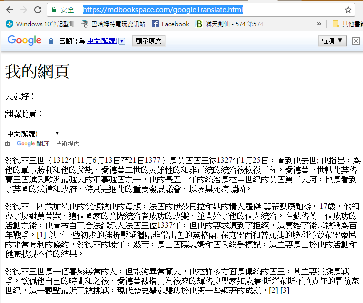

機器翻譯
Google MT 沒有開放原始碼，但是 OpenNMT 有
文獻： 神经机器翻译（NMT）相关资料整理 。
Google : 網頁版翻譯
Google : 文字版翻譯
Node 版本翻譯：
- https://github.com/Localize/node-google-translate (讚! 搭配 Google Cloud API)
- https://github.com/yixianle/translate-api (讚!)
- https://www.npmjs.com/package/google-translate-api
- https://github.com/Localize/node-google-translate
- https://github.com/GoogleCloudPlatform/google-cloud-node (Google Cloud API)
呈現：

原始碼：
<!DOCTYPE html>
<html lang="en-US">
<body>
<h1>My Web Page</h1>
<p>Hello everybody!</p>
<p>Translate this page:</p>
<div id="google_translate_element"></div>
<script type="text/javascript">
function googleTranslateElementInit() {
new google.translate.TranslateElement({pageLanguage: 'en'}, 'google_translate_element');
}
</script>
<script type="text/javascript" src="//translate.google.com/translate_a/element.js?cb=googleTranslateElementInit"></script>
<p>
Edward III (13 November 1312 – 21 June 1377) was King of England from 25 January 1327 until his death; he is noted for his military success and for restoring royal authority after the disastrous and unorthodox reign of his father, Edward II. Edward III transformed the Kingdom of England into one of the most formidable military powers in Europe. His long reign of fifty years was the second longest in medieval England and saw vital developments in legislation and government—in particular the evolution of the English parliament—as well as the ravages of the Black Death.
</p>
<p>
Edward was crowned at age fourteen after his father was deposed by his mother, Isabella of France, and her lover Roger Mortimer. At age seventeen he led a successful coup against Mortimer, the de facto ruler of the country, and began his personal reign. After a successful campaign in Scotland he declared himself rightful heir to the French throne in 1337 but his claim was denied. This started what became known as the Hundred Years' War.[1] Following some initial setbacks the war went exceptionally well for England; victories at Crécy and Poitiers led to the highly favourable Treaty of Brétigny. Edward's later years, however, were marked by international failure and domestic strife, largely as a result of his inactivity and poor health.
</p>
<p>
Edward III was a temperamental man but capable of unusual clemency. He was in many ways a conventional king whose main interest was warfare. Admired in his own time and for centuries after, Edward was denounced as an irresponsible adventurer by later Whig historians such as William Stubbs. This view has been challenged recently and modern historians credit him with some significant achievements.[2][3]
</p>
</body>
</html>